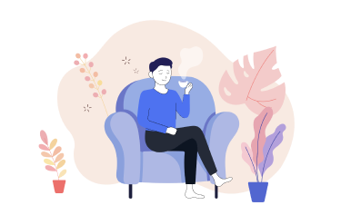

나의 성격 유형은
여유로운 관찰자
마음 속에 늘 여유를 가지고 살아가는 모습이 유유자적하는 선비와도 같아요. 어떤 것에든 편파되는 일이 잘 없고 한 발치 멀리서 세상을 관조해요. 뛰어난 통찰력을 가졌기 때문에 사물이나 사람에 대한 직관이 좋은 편이랍니다.

OTT 서비스 정주행
관심 분야에 몰두해 시간을 보내는 걸 좋아하는 자유로운 몽상가 유형은 집중력이 뛰어나요. DIY 키트를 이용해 소품을 만들어 보면 어떨까요? 예를 들면 캔들 만들기, 드림캐쳐 만들기, 양모 펠트 인형 만들기, 마카롱 만들기 등 종류는 아주 다양해요. 그날그날 끌리는 키트를 골라 만들어 보세요. 아주 즐거운 시간이 될 거예요.
다채롭게 채워가는 컬러링 북
여유로운 관찰자 유형은 전체적인 흐름을 파악하는 것에 능하기 때문에 나무보다 숲을 보는 편이에요. 따라서 어떤 작품을 만들어낼 때에도 완성되었을 때의 모습을 떠올리며 조화를 이루기 유리하죠. 컬러링 북을 통해 다채롭게 종이를 채워 가 보세요. 어느새 한 편의 완벽한 장면이 완성되어 있을 거예요.
1000피스 이상 퍼즐 맞추기
천성이 여유롭고 느긋한 당신은 어떤 일을 시간에 쫓겨 촉박하게 진행할 때 가장 큰 스트레스를 받는 편이에요. 여가 시간이 주어졌을 때, 시간 제한을 두지 않고 1000피스 이상의 퍼즐을 맞추며 힐링하는 시간을 가져 보세요. 더할 나위 없이 여유롭고 편안한 시간이 될 거예요. 또한 부분보다 전체를 볼 줄 아는 당신에게 꼭 맞는 취미죠.